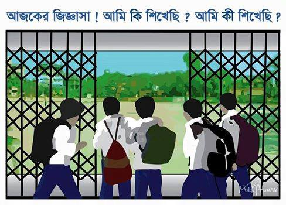

Started from the early 70's, KHILGAON GOVT. HIGH was one of the most successful schools of all time and it still holds it's position.The school itself got a good reputation for for achieving good grades. This is the only school in khilgaon which not only stuffs students with arrogent studies and turn them into a nerdhouse, but concentrate on extra curricular activities. It has not one but ''3'' big fields for students to do sports and exercises. It also provides students with a library, a lab and hall room. The teachers re friendly and helpfull and treats students like their own children.
It's only a couple of minutes walk from khilgaon taltola market. Their ask anyone and they'll provide you with useful information :)
খিলগাঁও সরকারী উচ্চ বিদ্যালয় ও কলেজ
খিলগাঁও ঢাকা - ১২১৯
টেলিফোন - ৭২১৭৪৭৬